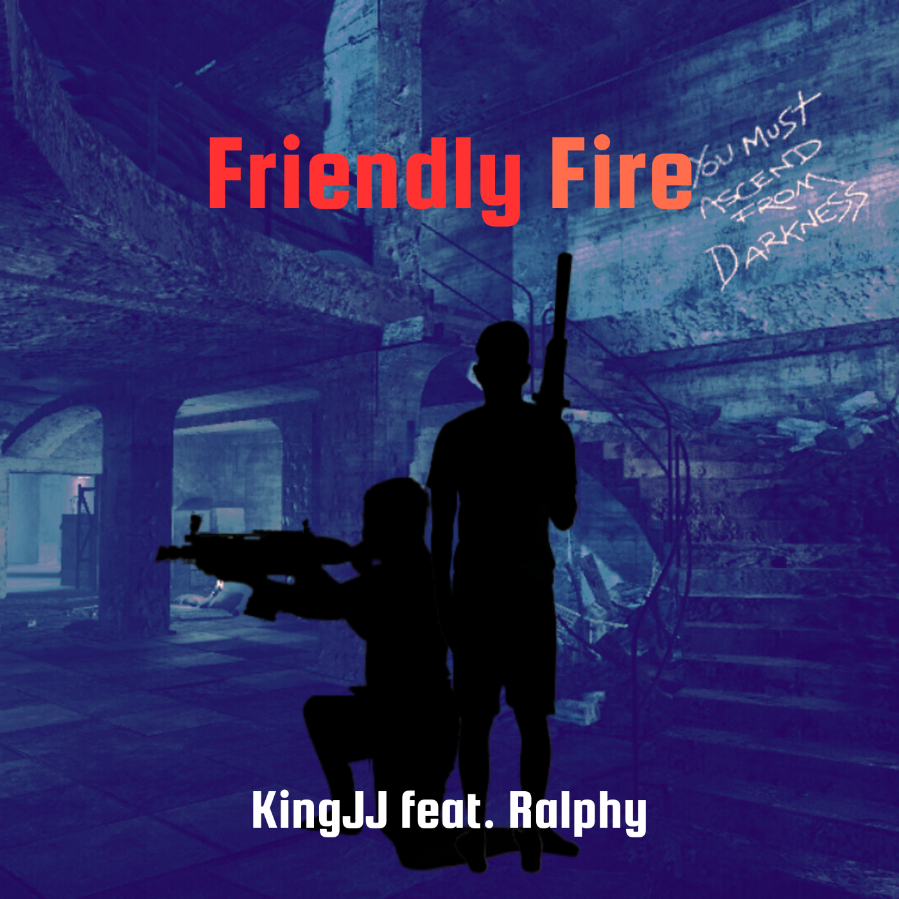

Lyrics
Friendly Fire
KingJJ feat. Ralphy • August 2025
[Intro] Check, check We live? Alright... (I got the gelato and Cuban tobacco) Alright (enemy spotted) [Verse 1: KingJJ] ...Like its warfare I don't wish you well, this ain't welfare Spitting on this battlefield, you in thin air Look at me, alliance to my country Ain't that so sweet? Ain't I so sweet? Look to my left, they fly high, this an explosion To my right, you jus' exposed for being fake You had an alliance with our country Didn't see that switch up coming But now you switched sides, you must be Years in planning, all just to hurt That ripple you caused went nuclear Think I had a sign to shoot me here? See, you shot at my heart But not just that, the heart of the country Now you accuse us of hurting you? Man, we never even put a scratch Uh, look at me, mess with me All this pain, jus' hit a truck into me Yeah, you the one leaving blows Yet the one to dodge for our attacks If only we done had a witness That could get you to jus' quit this (Hey, hey, we had some) (Then how is this a fight?) (No evidence to prove) (So it really was just petty?) Yeah, it was so petty, give me some spaghetti Vomit on my sweater (wait already?) Uh, back on track, ya know I never lack To go and catch my friends backs When they be stabbed in the back Kicked down a cliff, wait what's the diff? My inference is care was not there More was prolly done for hair Less care than honey for a bear You were on our team I would have never back stabbed (Aw, he cares) (Wait, I cared), Ha, yeah, right Learn to pick, your gah dang fight Time to learn, you weren't ever right Time to learn you weren't ever right. [Verse 2: (Ralphy)] (Ghost in this... X2) (okay switch) Left so quick, out the house You're silent now, but deadly mouth ...about, with other guys now Left a friend group, for a night out You a..., that's spite how saying that roles changed, pipe down playing victim, for the whole town validation girl, to loud like a game, man... Chasing tails, guys figure out that's what happens, when you... around (ghost in this... X2) ...up ma homeboy for months now know what I meant when I bust man aye Staying on facts now knowing that I won't back down hold a grudge for reason no rhyming with reason doing some... but passing main part is passion ------ (from here on a mix of freestyle and inspiration from lil' darkie) [Outro] 5 years of being friends for what? Mission failed, we'll get 'em next time